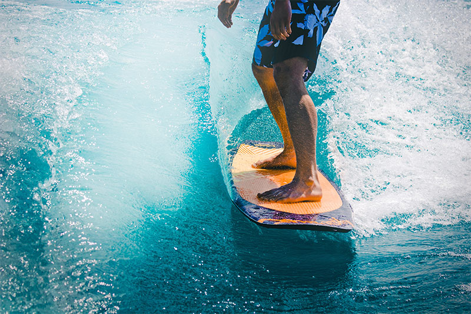

Surfing is a water sport that involves riding breaking waves to shore on a piece of equipment called a surfboard. Surfing is usually done in the ocean, but developments in technology have made it possible to create waves in pools and rivers as an alternative.
When it comes to ocean surfing, California, Hawaii and Australia are synonymous with the sport and culture. Though these are hot spots for catching waves, surfing is practiced all over the world, in places many people would never expect.
Surfing is considered dynamic and accessible, meaning adults, children and even dogs can learn. The popular sport has also inspired several variations, including windsurfing, wakeboarding and skim boarding.
The origin of the sport is said to date back thousands of years, to Polynesia and pre-modern Hawaii, but it’s difficult to pinpoint when exactly it began. Some say fishermen began surfing as a means to move more quickly on the water and then surfing gradually became a leisure activity.
Today it has evolved into more than just a sport; recreational surfing has developed it’s own subculture. Interestingly, the attitude of that culture often clashes with the concept of competitive surfing. Athletes from each side tend to have very different ideas about the sport and lifestyle.
- Some facts:
- The first account of surfing was given in 1778 by Captain James Cook when he saw it being practiced in Hawaii. Cook wrote: “I could not help concluding this man had the most supreme pleasure while he was driven so fast and so smoothly by the sea.”
- The first official surfing contest took place at Corona del Mar, California in 1928.
- The record for the longest surf ride is 3 hours, 55 minutes, set by Panamanian surfer Gary Saavedra in 2011, riding an artificial wave created by power boat.
- The longest ride ever done on a single wave was 37 minutes on a pororoca, a tidal bore found on the Amazon River.
- The biggest wave ever recorded was 1738 feet!
1738 feet translates to 530 meters - about 500 feet taller than the Empire State Building and nearly half the height of Ben Nevis! This mega-tsunami happened in 1958 in Lituya Bay in southern Alaska. - The first recorded use of ‘surfing’ as a mode of using the internet was in 1992.
- References:
- "What is Surfing?" by Diana Gerstacker (June 25, 20142) Blog Article
- "FUN FACTS ABOUT SURFING" by balint (15 August, 2014) Blog Article